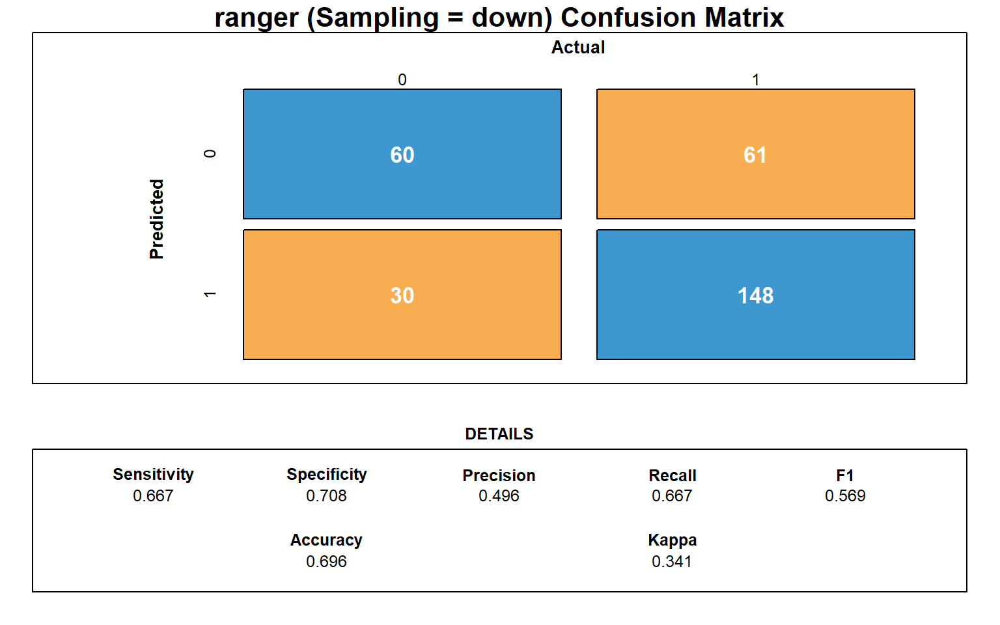

Seminar of Inferential Statistics
library(rpart)
library(caret)
library(nnet)
library(tidyverse)
library(ggplot2)
library(rpart.plot)
library(partykit)
library(psych)
library(GGally)
library(ggcorrplot)
library(corrplot)
library(gridExtra)
library(gmodels)
library(randomForest)
library(ISLR2)1 Data Cleaning and Processing
# setwd("/Users/piraveendupont/Desktop")
# setwd("C:/Users/Alicia/Documents/Unine/Applied Statistics/Homework German Credit")
df = read.csv("GermanCredit.csv", sep = ";")
# remove first column
df <- df[,-1]
#keep education binary(remove -1)
df <- df[df$EDUCATION %in% c(0, 1), ]
# remove age outlier 120 years --> change it to 51 years old
df$AGE[df$AGE > 100] <- 51
# keep guarantor binary --> change extra value to 0
df$GUARANTOR[!df$GUARANTOR %in% c(0, 1)] <- 0
# Change permanent resident scale
df$PRESENT_RESIDENT = df$PRESENT_RESIDENT - 1
nrow(df)## [1] 999## CHK_ACCT DURATION HISTORY NEW_CAR
## Min. :0.000 Min. : 4.00 Min. :0.000 Min. :0.0000
## 1st Qu.:0.000 1st Qu.:12.00 1st Qu.:2.000 1st Qu.:0.0000
## Median :1.000 Median :18.00 Median :2.000 Median :0.0000
## Mean :1.576 Mean :20.88 Mean :2.544 Mean :0.2342
## 3rd Qu.:3.000 3rd Qu.:24.00 3rd Qu.:4.000 3rd Qu.:0.0000
## Max. :3.000 Max. :72.00 Max. :4.000 Max. :1.0000
## USED_CAR FURNITURE RADIO.TV EDUCATION
## Min. :0.0000 Min. :0.0000 Min. :0.0000 Min. :0.00000
## 1st Qu.:0.0000 1st Qu.:0.0000 1st Qu.:0.0000 1st Qu.:0.00000
## Median :0.0000 Median :0.0000 Median :0.0000 Median :0.00000
## Mean :0.1031 Mean :0.1812 Mean :0.2803 Mean :0.04905
## 3rd Qu.:0.0000 3rd Qu.:0.0000 3rd Qu.:1.0000 3rd Qu.:0.00000
## Max. :1.0000 Max. :1.0000 Max. :1.0000 Max. :1.00000
## RETRAINING AMOUNT SAV_ACCT EMPLOYMENT
## Min. :0.0000 Min. : 250 Min. :0.000 Min. :0.000
## 1st Qu.:0.0000 1st Qu.: 1365 1st Qu.:0.000 1st Qu.:2.000
## Median :0.0000 Median : 2319 Median :0.000 Median :2.000
## Mean :0.0971 Mean : 3268 Mean :1.106 Mean :2.384
## 3rd Qu.:0.0000 3rd Qu.: 3969 3rd Qu.:2.000 3rd Qu.:4.000
## Max. :1.0000 Max. :18424 Max. :4.000 Max. :4.000
## INSTALL_RATE MALE_DIV MALE_SINGLE MALE_MAR_or_WID
## Min. :1.000 Min. :0.00000 Min. :0.0000 Min. :0.00000
## 1st Qu.:2.000 1st Qu.:0.00000 1st Qu.:0.0000 1st Qu.:0.00000
## Median :3.000 Median :0.00000 Median :1.0000 Median :0.00000
## Mean :2.975 Mean :0.05005 Mean :0.5475 Mean :0.09209
## 3rd Qu.:4.000 3rd Qu.:0.00000 3rd Qu.:1.0000 3rd Qu.:0.00000
## Max. :4.000 Max. :1.00000 Max. :1.0000 Max. :1.00000
## CO.APPLICANT GUARANTOR PRESENT_RESIDENT REAL_ESTATE
## Min. :0.00000 Min. :0.00000 Min. :0.000 Min. :0.0000
## 1st Qu.:0.00000 1st Qu.:0.00000 1st Qu.:1.000 1st Qu.:0.0000
## Median :0.00000 Median :0.00000 Median :2.000 Median :0.0000
## Mean :0.04104 Mean :0.05105 Mean :1.845 Mean :0.2823
## 3rd Qu.:0.00000 3rd Qu.:0.00000 3rd Qu.:3.000 3rd Qu.:1.0000
## Max. :1.00000 Max. :1.00000 Max. :3.000 Max. :1.0000
## PROP_UNKN_NONE AGE OTHER_INSTALL RENT
## Min. :0.0000 Min. :19.00 Min. :0.0000 Min. :0.0000
## 1st Qu.:0.0000 1st Qu.:27.00 1st Qu.:0.0000 1st Qu.:0.0000
## Median :0.0000 Median :33.00 Median :0.0000 Median :0.0000
## Mean :0.1532 Mean :35.53 Mean :0.1852 Mean :0.1792
## 3rd Qu.:0.0000 3rd Qu.:42.00 3rd Qu.:0.0000 3rd Qu.:0.0000
## Max. :1.0000 Max. :75.00 Max. :1.0000 Max. :1.0000
## OWN_RES NUM_CREDITS JOB NUM_DEPENDENTS
## Min. :0.0000 Min. :1.000 Min. :0.000 Min. :1.000
## 1st Qu.:0.0000 1st Qu.:1.000 1st Qu.:2.000 1st Qu.:1.000
## Median :1.0000 Median :1.000 Median :2.000 Median :1.000
## Mean :0.7137 Mean :1.407 Mean :1.904 Mean :1.155
## 3rd Qu.:1.0000 3rd Qu.:2.000 3rd Qu.:2.000 3rd Qu.:1.000
## Max. :1.0000 Max. :4.000 Max. :3.000 Max. :2.000
## TELEPHONE FOREIGN RESPONSE
## Min. :0.0000 Min. :0.00000 Min. :0.0000
## 1st Qu.:0.0000 1st Qu.:0.00000 1st Qu.:0.0000
## Median :0.0000 Median :0.00000 Median :1.0000
## Mean :0.4034 Mean :0.03704 Mean :0.6997
## 3rd Qu.:1.0000 3rd Qu.:0.00000 3rd Qu.:1.0000
## Max. :1.0000 Max. :1.00000 Max. :1.0000cols = names(df)
continuous <- c("DURATION", "AMOUNT", "AGE")
categorical <- cols[!cols %in% continuous] # Response is here
df <- df %>% mutate_at(vars(categorical), factor)
head(df)## CHK_ACCT DURATION HISTORY NEW_CAR USED_CAR FURNITURE RADIO.TV EDUCATION
## 1 0 6 4 0 0 0 1 0
## 2 1 48 2 0 0 0 1 0
## 3 3 12 4 0 0 0 0 1
## 4 0 42 2 0 0 1 0 0
## 5 0 24 3 1 0 0 0 0
## 6 3 36 2 0 0 0 0 1
## RETRAINING AMOUNT SAV_ACCT EMPLOYMENT INSTALL_RATE MALE_DIV MALE_SINGLE
## 1 0 1169 4 4 4 0 1
## 2 0 5951 0 2 2 0 0
## 3 0 2096 0 3 2 0 1
## 4 0 7882 0 3 2 0 1
## 5 0 4870 0 2 3 0 1
## 6 0 9055 4 2 2 0 1
## MALE_MAR_or_WID CO.APPLICANT GUARANTOR PRESENT_RESIDENT REAL_ESTATE
## 1 0 0 0 3 1
## 2 0 0 0 1 1
## 3 0 0 0 2 1
## 4 0 0 1 3 0
## 5 0 0 0 3 0
## 6 0 0 0 3 0
## PROP_UNKN_NONE AGE OTHER_INSTALL RENT OWN_RES NUM_CREDITS JOB NUM_DEPENDENTS
## 1 0 67 0 0 1 2 2 1
## 2 0 22 0 0 1 1 2 1
## 3 0 49 0 0 1 1 1 2
## 4 0 45 0 0 0 1 2 2
## 5 1 53 0 0 0 2 2 2
## 6 1 35 0 0 0 1 1 2
## TELEPHONE FOREIGN RESPONSE
## 1 1 0 1
## 2 0 0 0
## 3 0 0 1
## 4 0 0 1
## 5 0 0 0
## 6 1 0 12 Data Visualisation
2.1 Categorical Variables
# Categorical variables plotted with response
categorical_data <- df[, categorical]
par(mfrow = c(2,3))
last_var=length(categorical_data)-1
for (variable in names(categorical_data)[1:last_var]) {
if (variable != "Response") {
plot(categorical_data[[variable]] ~ categorical_data$RESPONSE, main = paste(variable), xlab = "Response", ylab = "")
}
}


2.2 Continuous Variables
for (variable in continuous) {
boxplot(df[[variable]] ~ df$RESPONSE,
data = df,
ylab = "RESPONSE", xlab = variable,
main = paste("Boxplot of", variable, "by RESPONSE"),
horizontal = T)
}


for (col in continuous) {
p <- ggplot(df, aes_string(x = col, fill = "RESPONSE")) +
geom_density(alpha = 0.5) +
ggtitle(paste("Density Plot of", col)) +
xlab(col) +
ylab("Density") +
geom_vline(aes_string(xintercept = paste0("mean(", col, ", na.rm = TRUE)")), linetype = "dashed", size = 0.5)
print(p)
}


3 Test-Train Split
##
## 0 1
## 0.3003003 0.6996997set.seed(5)
val_index <- createDataPartition(df$RESPONSE, p=0.7, list=FALSE) # change p = 0.5-0.9 to see which is best
TrainData <- df[val_index,]
TrainClasses <- df[val_index,31]
# head(TrainData)
# summary(TrainData)
TestData <- df[-val_index,]
TestClasses <- df[-val_index,31]
# head(TestData)
# summary(TestData)4 Select Key Variables Using Random Forest
# Train a Random Forest model
set.seed(2)
data <- na.omit(df)
nobs <- nrow(data)
attach(df)
form <- formula(RESPONSE ~ .)
target <- all.vars(form)[1]
train <- sample(nobs, 0.7*nobs)
library(randomForest)
rf_model <- randomForest(formula=form,
data=TrainData,
ntree=500, mtry=4,
sampsize=0.632*nobs,
importance=TRUE,
localImp=TRUE,
na.action=na.roughfix,
replace=FALSE)
# Convert to data frame for easier manipulation
importance_df <- as.data.frame(importance_scores)
importance_df$Variable <- rownames(importance_df)
# Sort by importance (MeanDecreaseGini)
importance_df <- importance_df[order(-importance_df$MeanDecreaseGini),]
# Print the importance scores
print(importance_df)## 0 1 MeanDecreaseAccuracy MeanDecreaseGini
## CHK_ACCT 15.51925864 7.29433056 1.443124e+01 29.441860
## AMOUNT 2.91263580 2.87248578 4.208788e+00 27.922767
## DURATION 4.27838313 8.70263104 9.392541e+00 24.298891
## AGE -0.08236202 1.91695285 1.414518e+00 23.359935
## HISTORY 4.09009349 4.50978856 5.801953e+00 15.706525
## EMPLOYMENT 1.98022463 0.83831272 1.785771e+00 14.811971
## SAV_ACCT 5.61244686 1.80117781 4.600282e+00 14.266082
## INSTALL_RATE -0.28842399 1.69123715 1.435634e+00 12.069635
## PRESENT_RESIDENT 0.99883201 1.69603506 2.013569e+00 11.420905
## JOB -0.79805460 2.29583700 1.210943e+00 8.407757
## NUM_CREDITS 1.30256104 1.82595750 2.434454e+00 5.703989
## NEW_CAR 3.81172343 -0.03254737 2.441998e+00 5.217565
## OTHER_INSTALL 1.24992382 3.06592773 3.181521e+00 5.068213
## REAL_ESTATE 0.10855455 3.46896192 2.911892e+00 4.704571
## OWN_RES 0.72926424 4.51239237 3.788407e+00 4.594375
## MALE_SINGLE 3.40832475 -0.15099981 1.686939e+00 4.466629
## TELEPHONE 2.49401390 0.50539871 2.106054e+00 4.421307
## PROP_UNKN_NONE 0.66749988 2.96018243 2.576874e+00 4.204741
## RADIO.TV 0.73748109 0.65076825 1.069074e+00 3.621729
## FURNITURE -1.61732294 1.12854209 1.156430e-01 3.540572
## NUM_DEPENDENTS -0.57315910 1.07730026 6.527292e-01 3.040293
## EDUCATION 0.80357207 1.58582765 1.805134e+00 2.888500
## RENT -0.78117809 1.54404927 8.899354e-01 2.796836
## USED_CAR -0.71088813 0.36215885 2.384033e-16 2.330101
## MALE_MAR_or_WID -0.77529455 0.64797361 -1.545268e-17 2.329647
## RETRAINING 0.85635201 -0.05214515 4.782008e-01 2.299642
## GUARANTOR 0.96427924 3.91480831 3.760825e+00 2.149219
## CO.APPLICANT 2.33597144 -0.29658318 1.350645e+00 1.973806
## MALE_DIV 0.63868327 -1.35057796 -6.885734e-01 1.954430
## FOREIGN 3.62327311 1.23666739 3.231228e+00 1.043857
## Variable
## CHK_ACCT CHK_ACCT
## AMOUNT AMOUNT
## DURATION DURATION
## AGE AGE
## HISTORY HISTORY
## EMPLOYMENT EMPLOYMENT
## SAV_ACCT SAV_ACCT
## INSTALL_RATE INSTALL_RATE
## PRESENT_RESIDENT PRESENT_RESIDENT
## JOB JOB
## NUM_CREDITS NUM_CREDITS
## NEW_CAR NEW_CAR
## OTHER_INSTALL OTHER_INSTALL
## REAL_ESTATE REAL_ESTATE
## OWN_RES OWN_RES
## MALE_SINGLE MALE_SINGLE
## TELEPHONE TELEPHONE
## PROP_UNKN_NONE PROP_UNKN_NONE
## RADIO.TV RADIO.TV
## FURNITURE FURNITURE
## NUM_DEPENDENTS NUM_DEPENDENTS
## EDUCATION EDUCATION
## RENT RENT
## USED_CAR USED_CAR
## MALE_MAR_or_WID MALE_MAR_or_WID
## RETRAINING RETRAINING
## GUARANTOR GUARANTOR
## CO.APPLICANT CO.APPLICANT
## MALE_DIV MALE_DIV
## FOREIGN FOREIGN# Set a threshold: for example, mean importance score
threshold_mean <- mean(importance_df$MeanDecreaseGini)
# Select important variables
important_vars_mean <- importance_df$Variable[importance_df$MeanDecreaseGini > threshold_mean]
# Print important variables
print(important_vars_mean) # 12## [1] "CHK_ACCT" "AMOUNT" "DURATION" "AGE"
## [5] "HISTORY" "EMPLOYMENT" "SAV_ACCT" "INSTALL_RATE"
## [9] "PRESENT_RESIDENT" "JOB"# Set a percentage threshold: for example, 10% of the maximum importance score
percentage_threshold <- 0.10
max_importance <- max(importance_df$MeanDecreaseGini)
threshold_10pc <- percentage_threshold * max_importance
# Select important variables
important_vars_10pc <- importance_df$Variable[importance_df$MeanDecreaseGini > threshold_10pc]
# Print important variables
print(important_vars_10pc) # 21## [1] "CHK_ACCT" "AMOUNT" "DURATION" "AGE"
## [5] "HISTORY" "EMPLOYMENT" "SAV_ACCT" "INSTALL_RATE"
## [9] "PRESENT_RESIDENT" "JOB" "NUM_CREDITS" "NEW_CAR"
## [13] "OTHER_INSTALL" "REAL_ESTATE" "OWN_RES" "MALE_SINGLE"
## [17] "TELEPHONE" "PROP_UNKN_NONE" "RADIO.TV" "FURNITURE"
## [21] "NUM_DEPENDENTS"5 Comparative Analysis of Various Methods
We try out different methods to see and compare the confusion matrix.
draw_confusion_matrix <- function(cm, type) {
layout(matrix(c(1,1,2)))
par(mar=c(2,2,2,2))
plot(c(100, 345), c(300, 450), type = "n", xlab="", ylab="", xaxt='n', yaxt='n')
title(paste(type, 'Confusion Matrix') , cex.main=2)
# create the matrix
rect(150, 430, 240, 370, col='#3F97D0')
text(195, 435, '0', cex=1.2)
rect(250, 430, 340, 370, col='#F7AD50')
text(295, 435, '1', cex=1.2)
text(125, 370, 'Predicted', cex=1.3, srt=90, font=2)
text(245, 450, 'Actual', cex=1.3, font=2)
rect(150, 305, 240, 365, col='#F7AD50')
rect(250, 305, 340, 365, col='#3F97D0')
text(140, 400, '0', cex=1.2, srt=90)
text(140, 335, '1', cex=1.2, srt=90)
# add in the cm results
res <- as.numeric(cm$table)
text(195, 400, res[1], cex=1.6, font=2, col='white')
text(195, 335, res[2], cex=1.6, font=2, col='white')
text(295, 400, res[3], cex=1.6, font=2, col='white')
text(295, 335, res[4], cex=1.6, font=2, col='white')
# add in the specifics
plot(c(100, 0), c(100, 0), type = "n", xlab="", ylab="", main = "DETAILS", xaxt='n', yaxt='n')
text(10, 85, names(cm$byClass[1]), cex=1.2, font=2)
text(10, 70, round(as.numeric(cm$byClass[1]), 3), cex=1.2)
text(30, 85, names(cm$byClass[2]), cex=1.2, font=2)
text(30, 70, round(as.numeric(cm$byClass[2]), 3), cex=1.2)
text(50, 85, names(cm$byClass[5]), cex=1.2, font=2)
text(50, 70, round(as.numeric(cm$byClass[5]), 3), cex=1.2)
text(70, 85, names(cm$byClass[6]), cex=1.2, font=2)
text(70, 70, round(as.numeric(cm$byClass[6]), 3), cex=1.2)
text(90, 85, names(cm$byClass[7]), cex=1.2, font=2)
text(90, 70, round(as.numeric(cm$byClass[7]), 3), cex=1.2)
# add in the accuracy information
text(30, 35, names(cm$overall[1]), cex=1.2, font=2)
text(30, 20, round(as.numeric(cm$overall[1]), 3), cex=1.2)
text(70, 35, names(cm$overall[2]), cex=1.2, font=2)
text(70, 20, round(as.numeric(cm$overall[2]), 3), cex=1.2)
}5.1 Logistic Regression
set.seed(5)
formula_with_interaction <- update(formula, . ~ . + DURATION:AMOUNT)
formula_with_interaction## RESPONSE ~ CHK_ACCT + AMOUNT + DURATION + AGE + HISTORY + EMPLOYMENT +
## SAV_ACCT + INSTALL_RATE + PRESENT_RESIDENT + JOB + AMOUNT:DURATION##
## Call:
## glm(formula = formula_with_interaction, family = binomial, data = TrainData)
##
## Deviance Residuals:
## Min 1Q Median 3Q Max
## -2.5739 -0.7260 0.4037 0.7270 2.0393
##
## Coefficients:
## Estimate Std. Error z value Pr(>|z|)
## (Intercept) 8.953e-01 9.565e-01 0.936 0.349222
## CHK_ACCT1 6.264e-01 2.478e-01 2.528 0.011483 *
## CHK_ACCT2 1.079e+00 4.332e-01 2.492 0.012716 *
## CHK_ACCT3 2.032e+00 2.750e-01 7.388 1.49e-13 ***
## AMOUNT -2.338e-04 8.343e-05 -2.802 0.005077 **
## DURATION -4.586e-02 1.473e-02 -3.114 0.001847 **
## AGE 8.160e-03 9.791e-03 0.833 0.404641
## HISTORY1 -2.918e-01 5.972e-01 -0.489 0.625164
## HISTORY2 7.489e-01 4.603e-01 1.627 0.103743
## HISTORY3 8.451e-01 5.305e-01 1.593 0.111152
## HISTORY4 1.342e+00 4.915e-01 2.730 0.006338 **
## EMPLOYMENT1 -9.980e-01 5.225e-01 -1.910 0.056144 .
## EMPLOYMENT2 -3.520e-01 5.038e-01 -0.699 0.484685
## EMPLOYMENT3 -1.135e-01 5.349e-01 -0.212 0.831928
## EMPLOYMENT4 -1.822e-01 5.007e-01 -0.364 0.715919
## SAV_ACCT1 3.863e-01 3.326e-01 1.162 0.245414
## SAV_ACCT2 -1.416e-01 4.396e-01 -0.322 0.747408
## SAV_ACCT3 8.775e-01 5.448e-01 1.611 0.107229
## SAV_ACCT4 1.132e+00 3.254e-01 3.477 0.000507 ***
## INSTALL_RATE2 -2.860e-02 3.589e-01 -0.080 0.936490
## INSTALL_RATE3 -3.893e-01 3.824e-01 -1.018 0.308681
## INSTALL_RATE4 -7.903e-01 3.421e-01 -2.310 0.020865 *
## PRESENT_RESIDENT1 -8.403e-01 3.412e-01 -2.463 0.013783 *
## PRESENT_RESIDENT2 -4.486e-01 3.889e-01 -1.153 0.248788
## PRESENT_RESIDENT3 -4.474e-01 3.364e-01 -1.330 0.183492
## JOB1 5.774e-01 7.387e-01 0.782 0.434397
## JOB2 4.316e-01 7.123e-01 0.606 0.544531
## JOB3 6.022e-01 7.166e-01 0.840 0.400719
## AMOUNT:DURATION 4.226e-06 2.284e-06 1.850 0.064259 .
## ---
## Signif. codes: 0 '***' 0.001 '**' 0.01 '*' 0.05 '.' 0.1 ' ' 1
##
## (Dispersion parameter for binomial family taken to be 1)
##
## Null deviance: 855.21 on 699 degrees of freedom
## Residual deviance: 651.17 on 671 degrees of freedom
## AIC: 709.17
##
## Number of Fisher Scoring iterations: 5probs.test <- predict(log.train, TestData[, important_vars_mean], type = "response")
RESPONSE.pred <- rep(0, times= length(probs.test))
RESPONSE.pred[probs.test > 0.5] = 1
table(TestData$RESPONSE, RESPONSE.pred)## RESPONSE.pred
## 0 1
## 0 39 51
## 1 30 179RESPONSE.pred = as.factor(RESPONSE.pred)
CrossTable(x = TestData$RESPONSE, y = RESPONSE.pred, prop.chisq=FALSE)##
##
## Cell Contents
## |-------------------------|
## | N |
## | N / Row Total |
## | N / Col Total |
## | N / Table Total |
## |-------------------------|
##
##
## Total Observations in Table: 299
##
##
## | RESPONSE.pred
## TestData$RESPONSE | 0 | 1 | Row Total |
## ------------------|-----------|-----------|-----------|
## 0 | 39 | 51 | 90 |
## | 0.433 | 0.567 | 0.301 |
## | 0.565 | 0.222 | |
## | 0.130 | 0.171 | |
## ------------------|-----------|-----------|-----------|
## 1 | 30 | 179 | 209 |
## | 0.144 | 0.856 | 0.699 |
## | 0.435 | 0.778 | |
## | 0.100 | 0.599 | |
## ------------------|-----------|-----------|-----------|
## Column Total | 69 | 230 | 299 |
## | 0.231 | 0.769 | |
## ------------------|-----------|-----------|-----------|
##
## ## Confusion Matrix and Statistics
##
## Reference
## Prediction 0 1
## 0 39 30
## 1 51 179
##
## Accuracy : 0.7291
## 95% CI : (0.6749, 0.7787)
## No Information Rate : 0.699
## P-Value [Acc > NIR] : 0.14161
##
## Kappa : 0.3104
##
## Mcnemar's Test P-Value : 0.02627
##
## Sensitivity : 0.4333
## Specificity : 0.8565
## Pos Pred Value : 0.5652
## Neg Pred Value : 0.7783
## Prevalence : 0.3010
## Detection Rate : 0.1304
## Detection Prevalence : 0.2308
## Balanced Accuracy : 0.6449
##
## 'Positive' Class : 0
## 
5.2 Decision Tree
df.ct <- rpart(formula, method="class",
data = TrainData, control = rpart.control(minsplit=4,cp=0.05),
model=TRUE)
summary(df.ct)## Call:
## rpart(formula = formula, data = TrainData, method = "class",
## model = TRUE, control = rpart.control(minsplit = 4, cp = 0.05))
## n= 700
##
## CP nsplit rel error xerror xstd
## 1 0.07857143 0 1.0000000 1.0000000 0.05773503
## 2 0.05714286 2 0.8428571 0.8952381 0.05584002
## 3 0.05000000 3 0.7857143 0.8952381 0.05584002
##
## Variable importance
## CHK_ACCT DURATION SAV_ACCT HISTORY
## 46 18 16 8
## AMOUNT PRESENT_RESIDENT AGE
## 6 3 2
##
## Node number 1: 700 observations, complexity param=0.07857143
## predicted class=1 expected loss=0.3 P(node) =1
## class counts: 210 490
## probabilities: 0.300 0.700
## left son=2 (376 obs) right son=3 (324 obs)
## Primary splits:
## CHK_ACCT splits as LLRR, improve=37.59995, (0 missing)
## DURATION < 15.5 to the right, improve=12.27433, (0 missing)
## HISTORY splits as LLRRR, improve=12.15645, (0 missing)
## AMOUNT < 3914 to the right, improve=10.94354, (0 missing)
## SAV_ACCT splits as LLRRR, improve=10.60146, (0 missing)
## Surrogate splits:
## SAV_ACCT splits as LLRRR, agree=0.614, adj=0.167, (0 split)
## HISTORY splits as LLLLR, agree=0.599, adj=0.133, (0 split)
## PRESENT_RESIDENT splits as LRLL, agree=0.569, adj=0.068, (0 split)
## DURATION < 15.5 to the right, agree=0.561, adj=0.052, (0 split)
## AGE < 30.5 to the left, agree=0.556, adj=0.040, (0 split)
##
## Node number 2: 376 observations, complexity param=0.07857143
## predicted class=1 expected loss=0.4521277 P(node) =0.5371429
## class counts: 170 206
## probabilities: 0.452 0.548
## left son=4 (167 obs) right son=5 (209 obs)
## Primary splits:
## DURATION < 22.5 to the right, improve=12.927030, (0 missing)
## AMOUNT < 3910 to the right, improve= 7.221928, (0 missing)
## HISTORY splits as LLRRR, improve= 6.096718, (0 missing)
## SAV_ACCT splits as LLRRR, improve= 6.094029, (0 missing)
## INSTALL_RATE splits as RRLL, improve= 3.425270, (0 missing)
## Surrogate splits:
## AMOUNT < 2805.5 to the right, agree=0.734, adj=0.401, (0 split)
## HISTORY splits as LLRLR, agree=0.609, adj=0.120, (0 split)
## JOB splits as RRRL, agree=0.564, adj=0.018, (0 split)
## SAV_ACCT splits as RLRRR, agree=0.561, adj=0.012, (0 split)
## INSTALL_RATE splits as RLRR, agree=0.561, adj=0.012, (0 split)
##
## Node number 3: 324 observations
## predicted class=1 expected loss=0.1234568 P(node) =0.4628571
## class counts: 40 284
## probabilities: 0.123 0.877
##
## Node number 4: 167 observations, complexity param=0.05714286
## predicted class=0 expected loss=0.4011976 P(node) =0.2385714
## class counts: 100 67
## probabilities: 0.599 0.401
## left son=8 (115 obs) right son=9 (52 obs)
## Primary splits:
## SAV_ACCT splits as LRRRR, improve=6.928484, (0 missing)
## DURATION < 31.5 to the right, improve=2.868989, (0 missing)
## INSTALL_RATE splits as RRLL, improve=2.815792, (0 missing)
## AMOUNT < 1381.5 to the left, improve=2.612639, (0 missing)
## AGE < 29.5 to the left, improve=2.468387, (0 missing)
## Surrogate splits:
## DURATION < 57 to the left, agree=0.701, adj=0.038, (0 split)
##
## Node number 5: 209 observations
## predicted class=1 expected loss=0.3349282 P(node) =0.2985714
## class counts: 70 139
## probabilities: 0.335 0.665
##
## Node number 8: 115 observations
## predicted class=0 expected loss=0.3043478 P(node) =0.1642857
## class counts: 80 35
## probabilities: 0.696 0.304
##
## Node number 9: 52 observations
## predicted class=1 expected loss=0.3846154 P(node) =0.07428571
## class counts: 20 32
## probabilities: 0.385 0.615
# Each node shows
# - the predicted class (bad or good credit),
# - the predicted probability of good credit,
# - the percentage of observations in the node.
# complexity table
printcp(df.ct) ##
## Classification tree:
## rpart(formula = formula, data = TrainData, method = "class",
## model = TRUE, control = rpart.control(minsplit = 4, cp = 0.05))
##
## Variables actually used in tree construction:
## [1] CHK_ACCT DURATION SAV_ACCT
##
## Root node error: 210/700 = 0.3
##
## n= 700
##
## CP nsplit rel error xerror xstd
## 1 0.078571 0 1.00000 1.00000 0.057735
## 2 0.057143 2 0.84286 0.89524 0.055840
## 3 0.050000 3 0.78571 0.89524 0.055840# Resub. Error, CV Error, min(CV Error)+1SE
par(pty="s")
plotcp(df.ct)
with(df.ct, {
lines(cptable[,2]+1,cptable[,3],type="b",col="red")
legend("topright", 1, c("Resub. Error","CV Error","min(CV Error)+1SE"),
lty=c(1,1,2),col=c("red","black","blue"),bty="n",cex=0.8)
}) 
# Deciding where to prune
cp <- df.ct$cptable
opt <- which.min(df.ct$cptable[, "xerror"])
r <- cp[, 4][opt] + cp[, 5][opt]
rmin <- min(seq(1:dim(cp)[1])[cp[, 4] < r])
cp0 <- cp[rmin, 1]
cat("size chosen was", cp[rmin, 2] + 1, "\n")## size chosen was 3## Call:
## rpart(formula = formula, data = TrainData, method = "class",
## model = TRUE, control = rpart.control(minsplit = 4, cp = 0.05))
## n= 700
##
## CP nsplit rel error xerror xstd
## 1 0.07857143 0 1.0000000 1.0000000 0.05773503
## 2 0.05771429 2 0.8428571 0.8952381 0.05584002
##
## Variable importance
## CHK_ACCT DURATION HISTORY SAV_ACCT
## 50 20 9 9
## AMOUNT PRESENT_RESIDENT AGE
## 7 3 2
##
## Node number 1: 700 observations, complexity param=0.07857143
## predicted class=1 expected loss=0.3 P(node) =1
## class counts: 210 490
## probabilities: 0.300 0.700
## left son=2 (376 obs) right son=3 (324 obs)
## Primary splits:
## CHK_ACCT splits as LLRR, improve=37.59995, (0 missing)
## DURATION < 15.5 to the right, improve=12.27433, (0 missing)
## HISTORY splits as LLRRR, improve=12.15645, (0 missing)
## AMOUNT < 3914 to the right, improve=10.94354, (0 missing)
## SAV_ACCT splits as LLRRR, improve=10.60146, (0 missing)
## Surrogate splits:
## SAV_ACCT splits as LLRRR, agree=0.614, adj=0.167, (0 split)
## HISTORY splits as LLLLR, agree=0.599, adj=0.133, (0 split)
## PRESENT_RESIDENT splits as LRLL, agree=0.569, adj=0.068, (0 split)
## DURATION < 15.5 to the right, agree=0.561, adj=0.052, (0 split)
## AGE < 30.5 to the left, agree=0.556, adj=0.040, (0 split)
##
## Node number 2: 376 observations, complexity param=0.07857143
## predicted class=1 expected loss=0.4521277 P(node) =0.5371429
## class counts: 170 206
## probabilities: 0.452 0.548
## left son=4 (167 obs) right son=5 (209 obs)
## Primary splits:
## DURATION < 22.5 to the right, improve=12.927030, (0 missing)
## AMOUNT < 3910 to the right, improve= 7.221928, (0 missing)
## HISTORY splits as LLRRR, improve= 6.096718, (0 missing)
## SAV_ACCT splits as LLRRR, improve= 6.094029, (0 missing)
## INSTALL_RATE splits as RRLL, improve= 3.425270, (0 missing)
## Surrogate splits:
## AMOUNT < 2805.5 to the right, agree=0.734, adj=0.401, (0 split)
## HISTORY splits as LLRLR, agree=0.609, adj=0.120, (0 split)
## JOB splits as RRRL, agree=0.564, adj=0.018, (0 split)
## SAV_ACCT splits as RLRRR, agree=0.561, adj=0.012, (0 split)
## INSTALL_RATE splits as RLRR, agree=0.561, adj=0.012, (0 split)
##
## Node number 3: 324 observations
## predicted class=1 expected loss=0.1234568 P(node) =0.4628571
## class counts: 40 284
## probabilities: 0.123 0.877
##
## Node number 4: 167 observations
## predicted class=0 expected loss=0.4011976 P(node) =0.2385714
## class counts: 100 67
## probabilities: 0.599 0.401
##
## Node number 5: 209 observations
## predicted class=1 expected loss=0.3349282 P(node) =0.2985714
## class counts: 70 139
## probabilities: 0.335 0.665
df.pred <- predict(df.prune, TestData[, important_vars_mean], type="class")
CrossTable(x = TestData$RESPONSE, y = df.pred, prop.chisq=FALSE)##
##
## Cell Contents
## |-------------------------|
## | N |
## | N / Row Total |
## | N / Col Total |
## | N / Table Total |
## |-------------------------|
##
##
## Total Observations in Table: 299
##
##
## | df.pred
## TestData$RESPONSE | 0 | 1 | Row Total |
## ------------------|-----------|-----------|-----------|
## 0 | 34 | 56 | 90 |
## | 0.378 | 0.622 | 0.301 |
## | 0.486 | 0.245 | |
## | 0.114 | 0.187 | |
## ------------------|-----------|-----------|-----------|
## 1 | 36 | 173 | 209 |
## | 0.172 | 0.828 | 0.699 |
## | 0.514 | 0.755 | |
## | 0.120 | 0.579 | |
## ------------------|-----------|-----------|-----------|
## Column Total | 70 | 229 | 299 |
## | 0.234 | 0.766 | |
## ------------------|-----------|-----------|-----------|
##
## ## Confusion Matrix and Statistics
##
## Reference
## Prediction 0 1
## 0 34 36
## 1 56 173
##
## Accuracy : 0.6923
## 95% CI : (0.6366, 0.7442)
## No Information Rate : 0.699
## P-Value [Acc > NIR] : 0.6265
##
## Kappa : 0.2194
##
## Mcnemar's Test P-Value : 0.0476
##
## Sensitivity : 0.3778
## Specificity : 0.8278
## Pos Pred Value : 0.4857
## Neg Pred Value : 0.7555
## Prevalence : 0.3010
## Detection Rate : 0.1137
## Detection Prevalence : 0.2341
## Balanced Accuracy : 0.6028
##
## 'Positive' Class : 0
##  ### General Caret Function
### General Caret Function
methods = c("nnet", "rpart" , "adaboost", "accuracy", "rf")
samplings = c("up", "down", "smote", "rose")
caret_fit = function(method, sample) {
modelFit <- caret::train(formula, # choose variables here
data=TrainData,
method= method, # nnet rpart adaboost accuracy rf (randomforest) ranger etc
preProcess="range",
tune_length = 10,
trace=FALSE,
trControl=trainControl(method="cv", sampling = sample)) # 10-fold cv, "repeated cv" , need add no. of repeats / sampling up down smote
modelFit
cm = confusionMatrix(predict(modelFit, TestData[,-31]), TestClasses)
cm
draw_confusion_matrix(cm, paste(method, " (Sampling = ", sample, ")", sep = ""))
}5.3 Random Forest

## Warning: package 'themis' was built under R version 4.2.3## Loading required package: recipes## Warning: package 'recipes' was built under R version 4.2.3##
## Attaching package: 'recipes'## The following object is masked from 'package:stringr':
##
## fixed## The following object is masked from 'package:stats':
##
## step
## Warning: package 'ROSE' was built under R version 4.2.3## Loaded ROSE 0.0-4

